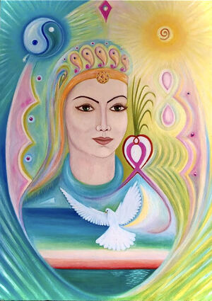

ФП Года 2020 — Фазовый портрет Материнства-2
{kind=link}
История создания
В 2009 году Я.С. Ибадов создал Фазовый портрет «Материнство». И в течение последующих десяти лет во время Всемирных интерактивных сеансов 31 декабря под руководством доктора Яшара Ибадова проводились коррекция по этому ФП. ФП «Материнство» открывает возможность очищения пространства – внутреннего и внешнего, преобразования материи во Времени и благодаря Времени. Каждый раз рисовались ФП текущего года. И только в 2019 году был создан Фазовый портрет планеты Земля. На одиннадцатый год, 2020-й, в период особой ситуации, которая касалась всех жителей планеты, был создан очередной, этапный ФП Года-2020, который и стал новым Фазовым портретом Материнства-2. И на основе этого Фазового портрета под руководством профессора Яшара Ибадова постоянно, через день, начиная с 1 мая, проводилась коллективная коррекция для очищения планеты и всего человечества от вируса Ковида.
Описание ФП Материнства-2
Женский (материнский) Образ в центре фазового портрета. Следует отметить, что первоначально образ Материнства воспринимался через зеркало Венеры (эллипс вокруг образа). В настоящее время это одновременно образ женщины-матери и Земли (матушки), материальной первоосновы Жизни. В Духовном квадрате фазового портрета символическое изображение Монады, которая представляет собой источник Жизни и питает жизнь, обновляет ее через импульс света, изображенного в виде Капли. Капля представляет собой энерго-информационный образ, наполненный гармонией монадического уровня. Она движется по внешней границе эллипса (фазе), обновляя информационные записи. Работа с образом Капли синхронизирует ритм работы сердца с ритмом Единого Времени. Это способствует улучшению работы сердца и поддерживает артериальное давление в норме. В планетарном масштабе речь идет о сохранении озонового слоя (соответственно – и атмосферы Земли).
Образ Солнца проявлен на ФП дважды: 1) на челе женского образа (чакра Аджна) – в центре круга точек, символизирующих планеты; 2) в квадрате Будущего образ Солнца как прообраз Творца. В центре Солнца мы видим 9-ку — источник янской энергии. Также 9-ка символизирует 9 месяцев внутриутробного развития человека.
8-ка – символ гармонии Небесного и Земного, времени-пространства, возможно — энергоинформационный образ будущего человека, силовая восьмерка. На левом плече Женского Образа – соединение двух Ключей Жизни: внутренний розовый иньский и внешний янский красного цвета в форме сердца. Между ними вращается еще один маленький ключ. Из него произрастает Росток новой жизни как результат воссоединения Ян-Инь. Растительная символика относится к информации духовного тела растительного происхождения. В человеке этому телу соответствует вегетативная нервная система, отвечающая за полноценное функционирование организма.
Лучи, исходящие от Солнца, соединяются с зеленым Ростком. Сердечная чакра Анахата зеленого цвета эманирует вибрации любви, солнечные лучи соотносятся с чакрой Манипура. Вибрации сливаются вместе и участвуют в процессе со-настройки. Солнечная энергия (стихия Огня) в процессе фотосинтеза преобразуется в кислород (стихия Воздух), образуя атмосферу как условие для жизни.
Голубь символизирует Дух Святой. Он парит над радугой, над морем, крылом взаимодействует с системой Ключей Жизни.
Голубь словно защищает Душу и легкие! Именно здесь находится место коррекции, остальные символы фазового портрета выполняют
работу по со-настройке с планетарным ритмом, с Солнцем и солнечной системой, с ходом Единого Времени, дыханием Творца.
От Ключей идет мощная вибрация в Будущее. Для движения в направлении Будущего необходима коррекция психики, коррекция записей души.
Для выполнения этой задачи работают такие символы ФП: Радуга (Завет Бога) в пространстве под системой Ключей на уровне Души, Голубь (Св.Дух),
Луна-Месяц за крылом Голубя. Месяц растущий, передающий в будущее очищенные, высокие записи души. В физическом плане очищаются
бронхи и легкие. На самом ФП поэтапно очищалось изображение Моря. В душе заложено семя духовное, представляющее собой божественную искру,
которая прорастает и развивается в процессе раскрытия сознания. По замыслу Творца сознание человека – зеркало бытия. Зеркало,
в котором соединяется божественное и человеческое на основе духовных законов (Радуга – завет).
Ангельские крылья обнимают с обеих сторон образ Матери. Если их совместить, получится структура ДНК человека. Точки на крыльях — места коррекции.
Светло-фиолетовый Ромб находится в центре по линии Времени над головой образа Матери, он словно Зеркало симметрирует информации
прошлого и будущего, эманирует принцип чистоты на все уровни пространства.
Элемент, который нарисован на лбу точками в круге, символизирует планеты Солнечной системы. В центре находится Солнце.
Когда смотрим прямо в центр, нужно представить, что остальные точки вращаются вокруг Солнца. При этом идет коррекция в основном чакры
Аджна, а также остальных чакр; таким образом гармонизируются эфирное и астральное тела.
Коррекция по Фазовому Портрету Года — 2020 Материнства-2
Работа через ауральный контакт:
1. Кладем лист с изображением Фазового портрета перед собой и ставим ладони на ребро по краям листа. Когда руки направлены параллельно фотографии портрета, идет спин-спин взаимодействие между торсионными полями Фазового портрета и пациента. Любование образом Матери усиливает резонансное состояние.
2. Движением глаз (ауральный контакт) обводим Иньский розовый Ключ (от хвоста Голубя до горла женского образа). Тем самым очищается состояние души, поднимаем слово, речь на новый уровень. Повторяем движение несколько раз до легкого состояния.
3. Работаем с внешним янским Ключом (движением от горла вниз). Это активизирует вибрации Духа. Синхронизируем душевное и духовное. Осознаем, что душа – лоно духа.
4. Поднимаемся через Росток к Солнцу, приносим свою благодарность за жизнь Творцу, входим снизу в 9-ку, обводим её взглядом несколько раз в янском направлении движения (против часовой стрелки). Переходим на желтый круг внутри солнца, продолжая яньское движение. Так обновляется наше сознание, ССС, происходит со-настройка с солнечными ритмами биоритмов головного мозга.
5. Переходим к силовой восьмерке 8, синхронизируя свою силу, своё время с движением Единого Времени. Верхний эллипс 8 вращается против часовой стрелки в янском направлении движения, нижний – по часовой стрелке в иньском направлении движения. Тем самым мы осознанно принимаем за основу жизни законы Духовного мира и проявляем их в материальном плане в своей жизни.
Работа контактная с помощью карандашей
Возможные варианты:
1. Берем карандаши в обе руки и устанавливаем их в нижние точки на Ангельских крыльях, проводим коррекцию до появления легкости. Одновременно переставляем карандаши в точки, расположенные выше, продолжаем коррекцию. И далее в третьи верхние точки переставляем карандаши для дальнейшей коррекции. Завершаем работу, соединяя оба карандаша в центральной точке, расположенной в фиолетовом ромбе над головой Образа Матери.
2. Оба карандаша устанавливаем в точку в центре фиолетового ромба, проводим коррекцию. Далее устанавливаем карандаши и проводим коррекцию в точках на Крыльях, двигаясь сверху вниз, распространяя таким образом высшие качества, благодать, чистоту на все уровни Материи. Взгляд Матери – духовная поддержка в работе.
3. Или, сначала поднимаемся по точкам вверх до ромба и затем спускаемся к первым точкам снова, работая карандашами в обеих руках.
Желаем удачи и всех благ!